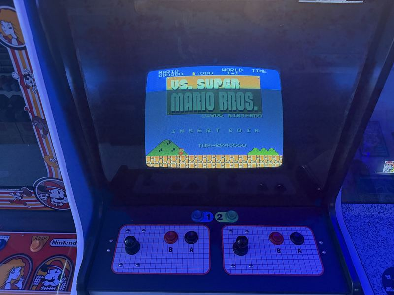

VS. UniSystem
Nintendo's arcade answer to the NES era, running VS. Super Mario Bros. — which is not the game you think it is.
In 1984 Nintendo put NES-grade hardware into arcade cabinets a full year before the NES itself reached American living rooms. The VS. System let operators swap games by changing a board, and it let Nintendo test what American players would pay a quarter for before betting a console launch on it.
This is the dedicated single-screen UniSystem, running VS. Super Mario Bros. And that game deserves a warning: it is not the Super Mario Bros. you finished as a child. It is a deliberately harder arcade edition built to eat quarters, with levels lifted from what became The Lost Levels, narrower platforms, and fewer places to rest.


The house rules
Every slot on the high score board is initialed DK, and every run on it went to 8-4. That is not a boast about the machine so much as an admission about the person who owns it.
There is a longer piece on exactly how and why the arcade version is harder — the level swaps, the enemy changes, and what Nintendo learned from it. Read that here →
Nintendo
Dedicated VS. UniSystem, single screen, garage arcade.
VS. Super Mario Bros.
1986. The harder arcade edition.
Free play
High score board initialed DK, top to bottom.
The UniSystem sits in the garage row with Donkey Kong, the Mario Bros. widebody and Big Blue. See the whole lineup →